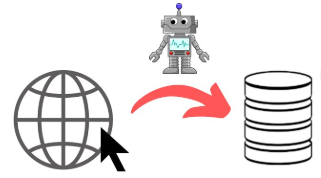
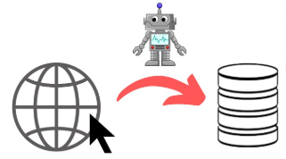

Le web scraping, également connu sous le nom d'extraction de données web, est une technique permettant de collecter des informations depuis des sites web de manière automatisée. Contrairement à une navigation manuelle, le web scraping utilise des scripts ou des outils automatisés pour extraire rapidement de grandes quantités de données structurées ou non structurées.
Comment fonctionne le Web Scraping ?
Le processus de web scraping repose sur plusieurs étapes :
- Identification : Identifier les pages web contenant les données d'intérêt.
- Extraction : Utiliser des outils (comme Python avec
BeautifulSoupouScrapy) pour récupérer le contenu HTML des pages. - Analyse : Filtrer les informations nécessaires en exploitant les balises HTML ou d'autres structures de données.
- Stockage : Enregistrer les données dans un format exploitable, tel que CSV, JSON ou une base de données.
Cas d'utilisation du Web Scraping
Le web scraping peut être utilisé dans de nombreux domaines, notamment :
- Veille concurrentielle : Suivre les prix des produits et services pour analyser la concurrence.
- Études de marché : Collecter des données pour comprendre les tendances et comportements des consommateurs.
- Recherche académique : Extraire des données pour des études ou des analyses approfondies.
- Agrégation de contenu : Rassembler des informations provenant de multiples sources pour créer des plateformes d'actualités ou d'avis.
- Analyse financière : Suivre les cours des actions, les indicateurs économiques et les rapports financiers.
 
